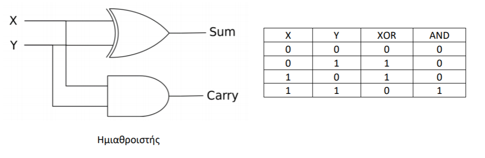

Εργαστήριο 1 στην Prolog
Θέματα που εξετάζονται στο εργαστήριο: γεγονότα1, κανόνες1, ερωτήματα1, ενοποίηση2, αναζήτηση απόδειξης2, αναδρομή3, λίστες4, αριθμητική με την Prolog5:
Εξάσκηση (εκφωνήσεις και λύσεις ασκήσεων)
Άσκηση PRO1E1 Δημιουργήστε βάση γνώσης με τα παρακάτω γεγονότα (facts):
- Ο Σωκράτης είναι φιλόσοφος.
- Ο Πλάτωνας είναι φιλόσοφος.
- Ο Περικλής είναι πολιτικός.
Προσθέστε τους εξής κανόνες (rules):
- Οι φιλόσοφοι είναι άνθρωποι.
- Οι πολιτικοί είναι άνθρωποι.
- Οι άνθρωποι είναι θηλαστικά.
- Τα θηλαστικά είναι θνητά.
Κάντε τις εξής ερωτήσεις (queries):
- Είναι ο Σωκράτης φιλόσοφος;
- Είναι ο Περικλής φιλόσοφος;
- Είναι ο Σωκράτης θηλαστικό;
- Είναι ο Περικλής θνητός;
- Ποιοι οντότητες είναι θνητές στη βάση γνώσης;
Λύση άσκησης PRO1E1
| pro1e1.pl | |
|---|---|
Βάση γνώσης:
- 7 clauses (προτάσεις)
- 3 facts (γεγονότα)
- 4 rules (κανόνες)
- 5 predicates (κατηγορήματα) : philosopher/1, politician/1, human/1, mammal/1, mortal/1
- 3 atomic terms (ατομικοί όροι) : socrates, plato, pericles
- 1 variable (μεταβλητή): X
Φόρτωση του αρχείου pro1e1.pl στην Prolog:
Εναλλακτικός τρόπος φόρτωσης του αρχείου pro1e1.pl στην Prolog:
Ένας ακόμα εναλλακτικός τρόπος φόρτωσης του αρχείου pro1e1.pl στην Prolog:
Ερώτημα 1: Είναι ο Σωκράτης φιλόσοφος;
Ερώτημα 2: Είναι ο Περικλής φιλόσοφος;
Ερώτημα 3: Είναι ο Σωκράτης θηλαστικό;
Ερώτημα 4: Είναι ο Περικλής θνητός;
Ερώτημα 5: Ποιοι οντότητες είναι θνητές στη βάση γνώσης;
Άσκηση PRO1E2 Δημιουργήστε το κατηγόρημα half_adder/4 που να υλοποιεί ένα κύκλωμα ημιαθροιστή. Δώστε 2 εναλλακτικές υλοποιήσεις με βάση τις ακόλουθες πληροφορίες.

Δίνεται ο πίνακας αληθείας του ημιαθροιστή:
| X | Y | C | S |
|---|---|---|---|
| 0 | 0 | 0 | 0 |
| 0 | 1 | 0 | 1 |
| 1 | 0 | 0 | 1 |
| 1 | 1 | 1 | 0 |
Τα X, Y είναι τα bits εισόδου, C είναι το bit κρατουμένου και S είναι το bit αθροίσματος.
Υποβάλετε τα ακόλουθα ερωτήματα:
- Ποιες είναι οι είσοδοι που δίνουν στο bit αθροίσματος την τιμή 1;
- Τι τιμή λαμβάνει το bit αθροίσματος αν το bit κρατουμένου είναι 1;
Λύση άσκησης PRO1E2 - α' υλοποίηση
| pro1e2.pl | |
|---|---|
Φόρτωση του αρχείου pro1e2.pl στην Prolog:
Ερώτηση 1: Ποιες είναι οι είσοδοι που δίνουν στο bit αθροίσματος την τιμή 1;
Ερώτηση 2: Τι τιμή λαμβάνει το bit αθροίσματος αν το bit κρατουμένου είναι 1;
Λύση άσκησης PRO1E2 - β' υλοποίηση
| pro1e2_alt.pl | |
|---|---|
Φόρτωση του αρχείου pro1e2_alt.pl στην Prolog:
Ερώτηση 1: Ποιες είναι οι είσοδοι που δίνουν στο bit αθροίσματος την τιμή 1;
Ερώτηση 2: Τι τιμή λαμβάνει το bit αθροίσματος αν το bit κρατουμένου είναι 1;
Άσκηση PRO1E3 Έστω το ακόλουθο γενεαλογικό δένδρο:
a
/ \
b c
/ \ |
d e f
που περιγράφεται με τις προτάσεις:
Το κατηγόρημαparent(X,Y) ερμηνεύεται ως ότι ο X είναι γονέας του Υ.
Ορίστε τα κατηγορήματα:
sibling(X,Y)Ισχύει όταν οΧκαι οΥείναι αδέρφια.cousin(X,Y)Ισχύει όταν οΧκαι οΥείναι ξαδέρφια.grandchild(X,Y)Ισχύει όταν οΧείναι εγγονός τουΥ.descendent(X,Y)Ισχύει όταν οΧείναι απόγονος τουΥ.
Υποβάλετε ερωτήματα που θα εμφανίζουν:
- Τα ζεύγη των αδερφών.
- Τα ζεύγη των ξαδερφιών.
- Τα εγγόνια του
a. - Τους απογόνους του
a.
Λύση άσκησης PRO1E3
| pro1e3.pl | |
|---|---|
Φόρτωση του αρχείου pro1e3.pl στην Prolog:
Ερώτηση 1: Εμφανίστε τα ζεύγη των αδερφιών.
ήΕρώτηση 2: Εμφανίστε τα ζεύγη των ξαδερφιών.
Ερώτηση 3: Εμφανίστε τα εγγόνια του a.
Ερώτηση 4: Εμφανίστε τους απογόνους του a.
Άσκηση PRO1E4 Δίνεται ο ορισμός του κατηγορήματος factorial/2 που υπολογίζει το παραγοντικό ενός ακεραίου αριθμού.
| factorial.pl | |
|---|---|
Ορίστε το κατηγόρημα doublefactorial/2 που να υπολογίζει το διπλό παραγοντικό ενός αριθμού n. Το διπλό παραγοντικό ορίζεται ως το γινόμενο όλων των ακεραίων από το 1 μέχρι και τον αριθμό n που είναι είτε άρτιοι είτε περιττοί, ανάλογα με το εάν το n είναι άρτιο ή περιττό αντίστοιχα (π.χ. το διπλό παραγοντικό του 7 είναι 1 * 3 * 5 * 7 = 105).
Λύση άσκησης PRO1E4
| pro1e4.pl | |
|---|---|
Φόρτωση του αρχείου pro1e4.pl στην Prolog:
Ερώτημα με το κατηγόρημα doublefactorial/2:
Άσκηση PRO1E5 Γράψτε τα κατηγορήματα my_length/2, my_element/2, my_sum_list/2 που να έχουν την ίδια συμπεριφορά με τα standard κατηγορήματα της γλώσσας length/2, element/2 και sum_list/2 αντίστοιχα. Αποθηκεύστε τα κατηγορήματα σε ένα αρχείο με όνομα pro1e5.pl. Φορτώστε το αρχείο και δοκιμάστε παραδείγματα που επιδεικνύουν τη λειτουργία των κατηγορημάτων.
Σημειώστε ότι με το help(<κατηγόρημα>). μέσα από το prompt της Prolog (?-) μπορείτε να λάβετε πληροφορίες για το αντίστοιχο κατηγόρημα. Για παράδειγμα:
?- help(length).
Availability: built-in
length(?List, ?Length) [ISO]
True if Length represents the number of elements in List. This predicate is a true relation
and can be used to find the length of a list or produce a list (holding variables) of length
Length. The predicate is non-deterministic, producing lists of increasing length if List is
a partial list and Length is a variable.
?- length(List,4).
List = [_27940,_27946,_27952,_27958].
?- length(List,Length).
List = [], Length = 0 ;
List = [_24698], Length = 1 ;
List = [_24698,_25826], Length = 2
...
It raises errors if Length is bound to a non-integer or a negative integer or if List is
neither a list nor a partial list. This error condition includes cyclic lists:
?- A=[1,2,3|A], length(A,L).
ERROR: Type error: `list' expected ...
Covering an edge case, the predicate fails if the tail of List is equivalent to Length:
?- List=[1,2,3|Length],length(List,Length).
false.
?- length(Length,Length).
false.
(END)
Με το πλήκτρο q επιστρέφετε στο prompt της Prolog.
Εναλλακτικά, πληροφορίες για τα κατηγορήματα μπορούν να βρεθούν στο https://www.swi-prolog.org/pldoc/man?section=predsummary.
Εντοπίστε τον ρόλο των συμβόλων ?, +, - που εμφανίζονται πριν τα ονόματα των παραμέτρων των κατηγορημάτων στις περιγραφές τους.
Λύση άσκησης PRO1E5
| pro1e5.pl | |
|---|---|
Φόρτωση του αρχείου pro1e5.pl στην Prolog:
Ερωτήματα με τα νέα κατηγορήματα (my_length/2, my_element/2, my_sum_list/2) που ορίστηκαν:
?- my_length([1,2,3,4], L).
L = 4.
?- my_member(2, [1,2,3]).
true.
?- my_member(4, [1,2,3]).
false.
?- my_member(X, [1,2,3]).
X = 1 ;
X = 2 ;
X = 3 ;
false.
?- my_member(1, L).
L = [1|_] ;
L = [_, 1|_] ;
L = [_, _, 1|_] ;
L = [_, _, _, 1|_] ;
L = [_, _, _, _, 1|_] .
?- my_sum_list([1,2,3,4,5], S).
S = 15.
Άσκηση PRO1E6 Γράψτε ένα κατηγόρημα binary_to_decimal(ListOfBits, Decimal) που να μετατρέπει μια λίστα από δυαδικά ψηφία στον αντίστοιχο δεκαδικό αριθμό. Για παράδειγμα:
Μπορεί να σας φανεί χρήσιμο το κατηγόρημα reverse/2 που αντιστρέφει μια λίστα.
Λύση άσκησης PRO1E6
Φόρτωση του αρχείου pro1e6.pl στην Prolog και στη συνέχεια εκτέλεση ερωτημάτων:
$ swipl -l pro1e6.pl
Welcome to SWI-Prolog (threaded, 64 bits, version 9.2.4)
SWI-Prolog comes with ABSOLUTELY NO WARRANTY. This is free software.
Please run ?- license. for legal details.
For online help and background, visit https://www.swi-prolog.org
For built-in help, use ?- help(Topic). or ?- apropos(Word).
?- binary_to_decimal([1,0,0,1], X).
X = 9.
?- binary_to_decimal([1,1,0,1,0], X).
X = 26.
?- binary_to_decimal([1,1,Χ,1,0], 26).
Χ = 0 ;
false.
?- binary_to_decimal([1,1,0,Χ,0], 26).
Χ = 1.